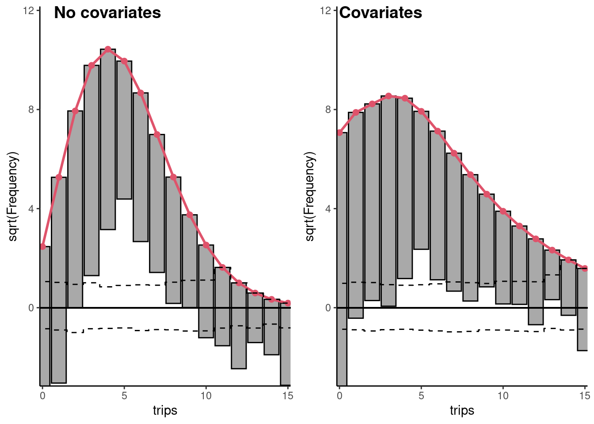
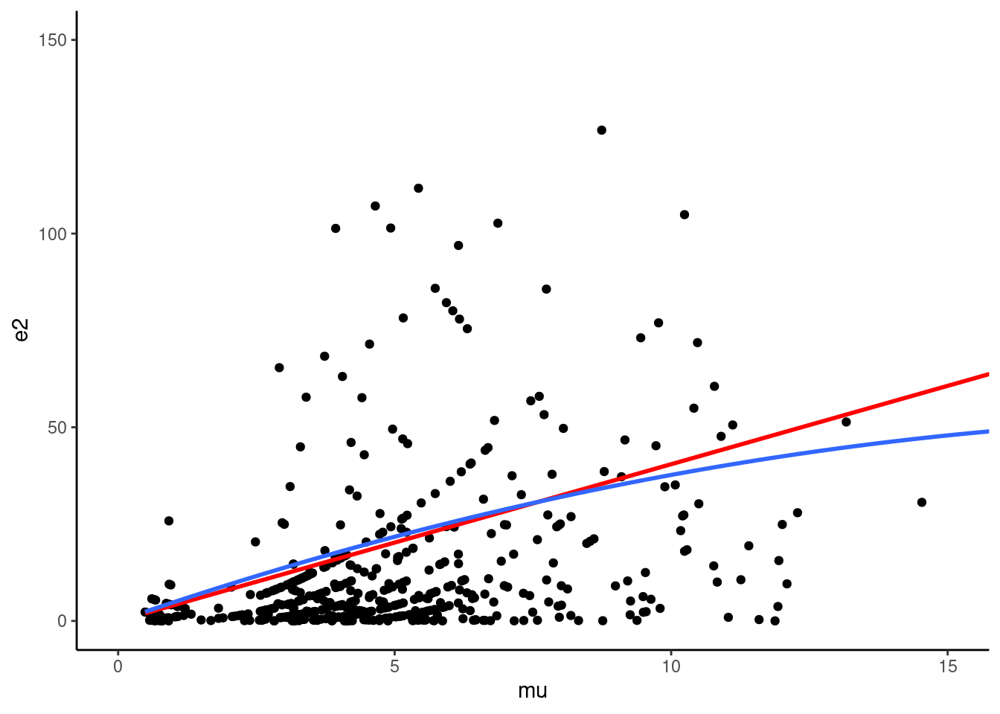
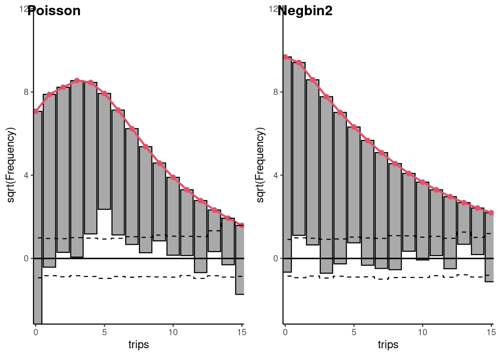
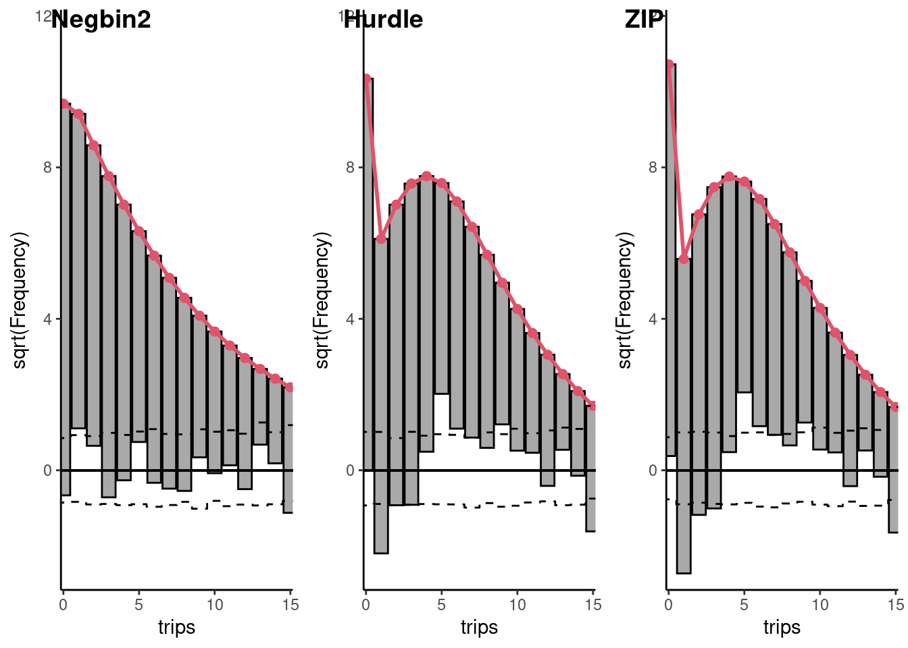
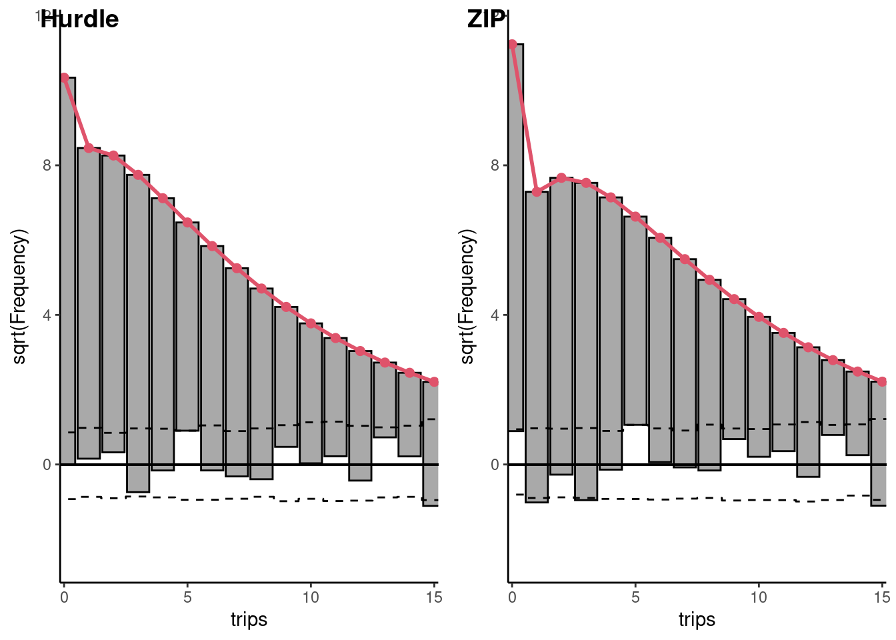

12 Count data
It is often the case in economics that the response is a count, i.e., a non-negative integer. In this case, fitting a linear model has a number of drawbacks:
- the integer nature of the response is not taken into account,
- the fitted model can predict negative values for some values of the covariates,
- if the distribution of the response is asymmetric, the logarithm transformation can’t be used in the common case where the response is 0 for a subset of observations.
There is therefore the need for specific models that will be presented in this chapter. In Section 12.1, we’ll illustrate the features of count data, using a survey of empirical studies. Section 12.2 is devoted to the benchmark count model, the Poisson model. Section 12.3 discusses two common features of count data: overdispersion and excess of zero. Finally Section 12.4 deals with the endogeneity problem with a count response.
12.1 Features of count data
An empirical survey
We start with the presentation of some data sets for which the response is a count. All these data are available in the micsr.count package and are summarized in ?tbl-empsurvey.
About half of these data sets concern demand for health care. doctor_aus (Cameron and Trivedi 1986), doctor_cal (Gurmu 1997), doctor_ger (Santos Silva and Windmeijer 2001) and doctor_us (Mullahy 1998) concern annual doctor visits, respectively in Australia, California, Germany and the United States. health_ins (Deb and Trivedi 2002) focuses on the link between health insurance and doctor visits using a randomized experiment in the United States, as health_reform (Winkelmann 2004) analyzes the effect of a health insurance reform in Germany. elderly (Deb and Trivedi 1997) focus on the demand for health care by elderly in the US and hospitalization (Geil et al. 1997) uses as the response the number of stays in the hospital.
The response of amc12 (Ellison and Swanson 2016) is the number of students per school who got a very high score at the AMC12 test (a test in mathematics). asymptotic (Koenker and Zeileis 2009) is a meta-analysis of wage equations reported in 156 papers and the analysis stresses on the hypothesis used to get the consistency of an estimator, i.e., that the number of regressors is fixed as the number of observations increases. bids (Cameron and Johansson 1997) analyzes the number of bids received by 126 firms that were targets of tender offers. cartels (Miller 2009) is a time series of bi-annual observations, the response being the number of cartels discoveries and the main covariate the pre- and post-period when a new leniency program was introduced. cigmales (Mullahy 1997) measures the number of cigarettes smoked daily by males in the United States. majordrg (Greene 2001) contain data about the number of major derogatory reports by cardholders. publications (Long 1997) analyzes the scientific production (measured by the number of publications) of individuals who got a PhD in biochemistry. somerville (Seller, Stoll, and Chavas 1985) reports the number of recreational visits to a lake in Texas. strikes (Kennan 1985) is a time series that reports the number of strikes (and also their length) in the United States. trips (Terza 1998) contains the number of trips taken by members of households the day prior the survey interview.
As we have seen in Section 5.1.1, count data can be considered as a random variable that follows a Poisson distribution, which has a unique parameter, this parameter being the mean and the variance of the series. The ML estimator of this parameter is the sample mean, which is indicated in the first column (\(\mu\)) of ?tbl-empsurvey. The empirical variance (\(\omega\)) is reported in the second column. Count data often take small values, and this is the case for almost all our data sets. We report in ?tbl-empsurvey the 9th decile, which is less than 10 for a majority of the data sets. Noticeable exceptions are asymptotic (the number of covariates in an econometric equation) and cigmales (the number of cigarettes smoked daily).
While comparing real count data to Poisson distribution, one often faces two problems:
- overdispersion, which means that the variance is much greater than the mean,
- excess of zero, which means that the mean probability of a zero value computed using the Poisson distribution is often much less than the observed share of zero in the sample.
The third column of ?tbl-empsurvey contains the mean variance ratio and shows that overdispersion seems to be the rule. The ratio is in general much larger than 1, noticeable exceptions being bids, cartels and majordrg. This overdispersion is important because we consider that the Poisson parameter is the same for every observation. Adding covariates will give specific values of the Poisson parameter for every observations and will therefore reduce the (conditional) variance. Anyway, we’ll see in subsequent sections that the overdispersion problem is often still present even after introducing covariates, because of unobserved heterogeneity.
The excess of zero problem is difficult to distinguish from overdispersion, as zero is an extreme value of the distribution and therefore, an excess of zero leads to overdispersion. The excess of zero can in part be explained by the fact that 0 is a special value that may not be correctly explained by the same process that explains strictly positive values. An example is cigmales, where 0 means no smoking, and smoking vs. non-smoking is quite different in nature than smoking a few or a lot of cigarettes. The eighth column of ?tbl-empsurvey returns the ratio between the empirical share of zero and the Poisson probability of 0 and, unsurprisingly, this ratio is huge for cigmales.
Analyzing the number of trips
Throughout this chapter, we’ll use the trips data set. It was used by Terza (1998) and the response is the number of trips taken the day before the interview. We first consider the unconditional distribution of the number of trips, computing the first two moments and the share of 0:
This series exhibits important overdispersion, as the variance is about 5 times larger than the mean. The ML estimator is the sample mean, and therefore, the predicted probability of 0 for the Poisson model is:
dpois(0, 4.551)
## [1] 0.01056which is much lower than the actual percentage of 0 which is 18.5%. There is therefore a large excess of 0, which also can be associated with overdispersion as 0 is a value far from the mean of 4.551. The topmodels package1 provides an interesting plotting function called rootogram to compare the actual and the fitted distribution of a count. The first is represented by bars and the second by a curve. The most simple representation is obtained by setting the style and the scale parameters respectively to "standing" and "raw" (see Figure 12.1). With the first, the bottom of all the bars is on the horizontal axes; with the second one, the absolute frequencies are displayed on the vertical axes. For example, for \(Y=0\), the absolute frequency is 107 and, as seen previously, the fitted probability is \(0.01056\) which implies, as the number of observations is 577, a fitted frequency of \(577 \times 0.01056 = 6.1\). The frequencies are clearly over-estimated for values of the response close to the mean (3, 4, 5, 6) and under-estimated for extreme values. This is particularly the case for 0, which indicates that a specific problem of excess of zero may be present.2
12.2 Poisson model
Derivation of the Poisson model
The basic count data model is the Poisson model. It relies on the hypothesis that the response is a Poisson variable and therefore that the probability of a given value \(y\) is:
\[ \mbox{P}(Y = y, \mu) = \frac{e^{-\mu}{\mu} ^ y}{y !} \]
The Poisson distribution is defined by a unique parameter \(\mu\), which is the mean and the variance of the distribution. This is a striking feature of the Poisson distribution which differs for example from the normal distribution which has two separate position and dispersion parameters (respectively the mean and the standard deviation). The Poisson probability can also be written as:
\[ \mbox{P}(Y = y, \mu) = e^{y \ln \mu-\mu- \ln y !} \] and therefore, the Poisson model belongs to the generalized linear model family (see Section 10.3), with \(\theta = \ln \mu\), \(b(\theta) = \mu = e^ \theta\), \(\phi = 1\) and \(c(y, \phi) = - \ln y !\). The mean is \(b'(\theta) = e ^ \theta = \mu\) and the variance \(\phi b''(\theta) = e ^ \theta = \mu\). The link defines the relation between the linear predictor \(\eta\) and the parameter of the distribution \(\mu\): \(\eta = g(\mu)\). The canonical link is such that \(\theta = \eta\) and it is therefore, for the Poisson model, the log link: \(\eta = \ln \mu\). For a given set of covariates, the Poisson parameter for observation \(n\) is \(\mu_n = g ^ {-1}(\eta_n)\), with \(\eta_n = \alpha + \beta ^ \top x_n = \gamma ^ \top z_n\) the linear predictor. Therefore:
\[ \mu_n = \mbox{E}(y \mid x_n) = e^{\alpha + \beta^\top x_n} = e^{\gamma ^ \top z_n} \tag{12.1}\]
and the log-likelihood function is:
\[ \ln L (\gamma, y, Z) = \sum_{n=1} ^ N \ln \frac{e^{-e^{\gamma^\top z_n}} e ^{y_n\gamma ^ \top z_n}}{y_n !} = \sum_{n=1} ^ N -e^{\gamma^\top z_n} + y_n \gamma^\top z_n - \ln y_n ! \]
The first-order conditions for a maximum are:
\[ \frac{\partial \ln L}{\partial \gamma} = \sum_{n = 1} ^ N \left(y_n - e^{\gamma^\top z_n}\right)z_n = 0 \tag{12.2}\]
which states, as in the OLS model, that the difference between the actual value of the response \(y\) and the prediction of the model (which can be called the residual) should be orthogonal to every covariate. It is a very important property, as it implies that the Poisson model is consistent if the conditional expectation function is correctly specified, whether or not the hypothesis of the Poisson distribution is correct. Moreover, as the first element of \(z_n\) is 1, the first element of Equation 12.2 implies that:
\[ \bar{y} = \frac{1}{N} \sum_{n=1} ^N e ^ {\hat{\gamma}^\top z_n} \tag{12.3}\]
which means that the mean of the predictions equals the mean value of \(y\) in the sample.
For the trips data set, the covariates are the share of trips for work or school (workschl), the number of individuals in the household (size), the distance to the central business district (dist), a dummy (smsa) for large urban area, the number of full-time workers in a household (fulltime), the distance from home to the nearest transit node (distnode), household income divided by the median income of the census tract (realinc), a dummy if the survey period is Saturday or Sunday (weekend) and a dummy for owning at least one car (car). The Poisson model is fitted using the glm function and setting the family argument to poisson. As for the binomial model, the family argument can be a character, a function without argument (in this case, the default link is chosen) or a function with a link argument.3 For the sake of comparison, we also estimate a linear model using lm:
Interpretation of the coefficients
As for any non-linear models, the marginal effects are not equal to the coefficients. Taking the derivative of the conditional expectation function (Equation 12.1) with the kth covariate, we get the following marginal effect for observation \(n\):
\[ \frac{\partial \mbox{E}(y\mid x_n)}{\partial x_{nk}} = \beta_k e^{\gamma^\top z_n} \]
which can be consistently estimated by \(\hat{\beta}_k e^{\hat{\gamma}^\top z_n}\). Note that the ratio of the marginal effects of two covariates \(k\) and \(l\) is \(\beta_k / \beta_l\) and therefore doesn’t depend on the values of the covariates for a specific observation. The average marginal effect (AME) for the \(N\) observations is:
\[ \hat{\beta}_k \frac{\sum_{n=1}^N e^{\hat{\gamma}^\top z_n}}{N} \]
But, if the regression contains an intercept, the sample mean of the predictions is the sample mean of the response (see Equation 12.3). Therefore, the average marginal effect is \(\hat{\beta}_k \bar{y}\). Therefore, we can for example compare the estimate slopes in a linear model (which are directly the marginal effects) to the Poisson estimators multiplied by the mean of the response.
We now print the coefficients obtained for the Poisson and for the linear model:
(Intercept) workschl size dist smsa fulltime
lm -0.8799 -2.1504 0.8285 -0.012944 -0.04841 1.3331
poisson -0.5703 -0.4556 0.1667 -0.002199 -0.03093 0.2482
distnod realinc weekend car
lm 0.028952 0.13339 -0.47650 2.219
poisson 0.004879 0.01882 -0.07382 1.413An increase of 1 of realinc means that household’s income increases by an amount equal to the local median income. The linear models indicates that the number of trips then increases by \(0.133\) trips (the sample mean for trips being 4.55). The Poisson model indicates that the relative increase of trips \(dy /y\) is equal to \(0.019\), i.e., 2%. At the sample mean, it corresponds to an increase of \(0.019 \times 4.55 = 0.086\) trips.
If the interview concerns a weekend day, the OLS coefficient is \(-0.48\), which indicates that the number of trips taken during the weekend are about one-half less, compared to a weekday. For such a dummy variable, denoting \(\beta_w\) and \(z_0\) a given vector of covariates such that \(x_w = 0\), \(\gamma^\top z_0\) is the linear predictor for a weekday and \(\gamma^\top z_0 + \beta_w\) the linear predictor for a week-end day. Therefore, the relative difference \(\tau\) of the number of trips between a weekend day and a weekday is:
\[ \tau = \frac{e^{\gamma^\top z_0 + \beta_w}- e^{\gamma^\top z_0}}{e^{\gamma^\top z_0}} = e^{\beta_w} - 1 = e^{-0.0738} - 1 = - 0.071 = 7.1\% \]
The previous expression indicates also that \(\beta_w = \ln (1 + \tau) \approx \tau\). For small values of \(\beta_w\), the coefficient can be interpreted as the relative difference of the response. In terms of absolute value, at the sample mean, the absolute difference is \(- 0.071 \times 4.55 = -0.323\), which is close to the OLS coefficient. Of course the approximation is only relevant for small values of the coefficient. If we consider the coefficient of cars, the value for the Poisson model is \(1.413\) which implies an increase of \(e^{1.413} - 1 = 3.1 = 310\)% much larger that the value of the coefficient.
Computation of the variance of the estimator
The matrix of the second derivatives is:
\[ \frac{\partial \ln L}{\partial \gamma\partial \gamma ^ \top}=-\sum_{n=1}^N e^{\gamma^\top z_n}z_n z_n^\top \]
The information matrix is the opposite of the hessian (as it doesn’t depend on \(y\), it is equal to its expected value) and the variance of the gradient. The latter is:
\[ \sum_{n=1} ^ N \mbox{E}\left( (y_n - e^{\gamma^\top z_n})^2 z_n z_n^\top\right) = \sum_{n=1} ^ N e^{\gamma^\top z_n} z_n z_n^\top \]
as \(\mbox{E}\left( (y_n - e^{\gamma^\top z_n}) ^2 \right)\) is the conditional variance which equals the conditional expectation for a Poisson distribution. The estimated variance of the estimator is therefore:
\[ \hat{\mbox{V}}(\hat{\beta}) = \left(\sum_{n=1} ^ N e^{\hat{\gamma}^\top z_n} z_n z_n^\top\right) ^ {-1} = \left(\sum_{n=1} ^ N \hat{\mu}_n z_n z_n^\top\right) ^ {-1} \] This estimator is consistent only if the distribution of the response is Poisson, and therefore if the conditional variance equals the conditional mean. A more general estimator is based on the sandwich formula:
\[ \left(\sum_{n=1} ^ N \hat{\mu}_n z_n z_n^\top\right) ^ {-1} \left(\sum_{n=1} ^ N (y_n - \hat{\mu}_n)^2 z_n z_n^\top\right) \left(\sum_{n=1} ^ N \hat{\mu}_n z_n z_n^\top\right) ^ {-1} \tag{12.4}\]
One alternative is to assume that the variance is proportional to the mean: \(\mbox{V}(y|x) = \phi \mbox{E}(y|x)\). \(\phi\) can then be consistently estimated by:
\[ \hat{\phi} = \frac{1}{N}\sum_{n=1} ^ N \frac{(y_n - \hat{\mu}_n) ^ 2}{\mu_n} \tag{12.5}\]
which leads to the third estimator of the covariance matrix:
\[ \hat{\mbox{V}}(\hat{\gamma}) = \hat{\phi}\left(\sum_{n=1} ^ N \hat{\mu}_n z_n z_n^\top\right) ^ {-1} \tag{12.6}\]
The “quasi-Poisson” model is obtained by using the log link and Equation 12.6 for the variance. It leads to the same estimator as the Poisson model and a variance that is greater (respectively lower) than the one of the Poisson model if there is overdispersion (respectively underdispersion). It can be fitted using glm by setting the family argument to quasipoisson:
qpois_trips <- update(pois_trips, family = quasipoisson)Compared to the Poisson model, the standard deviations of the quasi-Poisson model are inflated by a factor which is the square root of the estimate of the variance-mean ratio. This factor can be estimated using Equation 12.5, which makes use of the residuals of the Poisson regression.
The response residual is \(y_n - \hat{\mu}_n\), and we get the Pearson residual by dividing the response residual by the standard deviation, which is \(\sqrt{\hat{\mu}_n}\). Therefore, the estimation of the variance-mean ratio is simply the sum of square of the Pearson residuals divided by the sample size (the number of degrees of freedom can be used instead).
phi <- sum(e_pears ^ 2) / df.residual(pois_trips)
c(phi, sqrt(phi))
## [1] 3.366 1.835The estimated variance-mean ratio is more than 3, so that the standard deviations of the quasi-Poisson model are almost 2 times larger than those of the Poisson model (1.835). The sandwich estimator can be constructed by extracting from the fitted Poisson model the model matrix (\(Z\)), the fitted values (\(\hat{\mu}_n\)) and the response residuals (\(y_n - \hat{\mu}_n\)):
mu <- pois_trips %>% fitted
e <- pois_trips %>% resid(type = "response")
Z <- pois_trips %>% model.matrixWe can then compute the “bread” (B) and the “meat” (M):
Applying Equation 12.4, and taking the square root of the diagonal elements, we get:
The sandwich package provides the vcovHC function which computes different flavors of the sandwich estimator of the variance. The one that corresponds to Equation 12.4 is obtained by setting type to HC.
The sandwich standard errors can also be extracted from the Poisson model using stder with the vcov and type arguments (respectively equal to sandwich::vcovHC and "HC"):
Taking the ratio of the simple standard deviations of the coefficients and the sandwich estimator, we get:
stder(sand_vcov) / stder(pois_trips)(Intercept) workschl size dist smsa
1.481 1.677 2.059 1.139 1.996
fulltime distnod realinc weekend car
1.695 1.931 2.888 2.023 1.415 As previously, the robust standard deviations are about twice the basic ones on average, but the ratio now depends on the coefficient.
Overdispersion
A more general expression for the variance is the following Negbin specification:
\[ \sigma_n ^ 2 = \mu_n + \alpha \mu_n ^ p \]
with two special cases:
- \(p = 1\) (NB1) which implies that the variance is proportional to the expectation, \(\sigma_n ^ 2 = (1 + \alpha) \mu_n\),
- \(p = 2\) (NB2) which implies that the variance is quadratic in the expectation, \(\sigma_n ^ 2 = \mu_n + \alpha \mu_n ^ 2\).
Tests for overdispersion can easily be implemented using one of the three test principles: Wald, likelihood ratio and score tests. The first two require the estimation of a more general model that doesn’t impose the equality between the conditional mean and the conditional variance. The score test requires only the estimation of the constrained (Poisson) model. It can take different forms; we’ll just present here the test advocated by Cameron and Trivedi (1986) who use an auxiliary regression.4 The null hypothesis is:
\[ \mbox{E}\left( (y_n - \mu_n) ^ 2 - y_n\right) = \sigma_n ^ 2 - \mu_n = 0 \]
With the NB1 specification, the alternative is:
\[ \mbox{E}\left( (y_n - \mu_n) ^ 2 - y_n\right) = (1 + \alpha)\mu_n - \mu_n = \alpha \mu_n \]
or:
\[ \frac{\mbox{E}\left( (y_n - \mu_n) ^ 2 - y_n\right)}{\mu_n} = \alpha \tag{12.7}\]
The hypothesis of equidispersion (i.e., \(\alpha = 0\)) can be tested by regressing \(\frac{ (y_n - \hat{\mu}_n) ^ 2 - y_n}{\hat{\mu}_n}\) on a constant and comparing the Student statistic to the relevant critical value. With the NB2 specification, the alternative is:
\[ \mbox{E}\left( (y_n - \mu_n) ^ 2 - y_n\right) = \mu_n + \alpha\mu_n ^ 2 - \mu_n = \alpha \mu_n ^2 \]
or:
\[ \frac{\mbox{E}\left( (y_n - \mu_n) ^ 2 - y_n\right)}{\mu_n} = \alpha \mu_n \tag{12.8}\]
The hypothesis of equidispersion (i.e., \(\alpha = 0\)) can then be tested by regressing \(\frac{ (y_n - \hat{\mu}_n) ^ 2 - y_n}{\hat{\mu}_n}\) on \(\hat{\mu}_n\) without an intercept and comparing the Student statistic to the relevant critical value. Note that the response in this auxiliary regression can be written as: \((y_n - \hat{\mu}_n) ^ 2 / \hat{\mu} - y_n/\hat{\mu}_n\), which is the difference between the square of the Pearson residual and the ratio of the actual and the fitted value of the response:
hmu <- fitted(pois_trips)
y <- model.response(model.frame(pois_trips))
e_pears <- resid(pois_trips, type = "pearson")
resp_areg <- e_pears ^ 2 - y / hmu
lm(resp_areg ~ 1) %>% gaze(coef = 1)
## Estimate Std. Error t value Pr(>|t|)
## (Intercept) 2.314 0.406 5.7 1.9e-08
lm(resp_areg ~ hmu - 1) %>% gaze
## Estimate Std. Error t value Pr(>|t|)
## hmu 0.4671 0.0765 6.11 1.9e-09In both regressions, the t statistic is much higher than 1.96, the p-value is very close to zero so that the equidispersion hypothesis is strongly rejected.
To see to what extent the introduction of covariates has reduced the overdispersion problem, we can produce once again a rootogram, this time using the fitted Poisson model. We use the default style which is "hanging", which means that the bars are vertically aligned on the points that display the fitted frequencies and the default scale which is "sqrt"; the vertical axis indicates the square root of the frequencies, to increase the readability of small frequencies. Rootograms for the Poisson model are presented on Figure 12.2 along with the previous rootogram for the unconditional distribution of trips. The two figures are first created without being plotted by setting the plot argument to FALSE, and are then assembled in one figure using ggpubr::ggarrange. The limits on the vertical axis are set to the same values for the two plots so that the frequencies for the two figures can be easily compared.
uncond_trips <- glm(trips ~ 1, data = trips, family = "poisson")
fig_raw <- topmodels::rootogram(uncond_trips,
plot = FALSE) %>%
autoplot + coord_cartesian(xlim = c(0, 15), ylim = c(-3, 12))
fig_covar <- topmodels::rootogram(pois_trips, plot = FALSE) %>%
autoplot + coord_cartesian(xlim = c(0, 15), ylim = c(-3, 12))
figure <- ggpubr::ggarrange(fig_raw, fig_covar,
labels = c("No covariates", "Covariates"),
ncol = 2, nrow = 1)
figure
One can see that the bottom of the bars is closer to the horizontal axis for the right figure (Poisson model with covariates), which indicates that the inclusion of covariates reduces slightly the overdispersion problem, which anyway still remains. Moreover, the excess of zero largely remains, which suggests that a model that takes the specificity of zero values should be used. The overdispersion phenomenon can also be represented by plotting the square of the residuals against the fitted values, the straight line (NB1 hypothesis) and the parabola (NB2 hypothesis) that fit the data. The result is presented in Figure 12.3.
tb <- tibble(e2 = resid(pois_trips, type = "response") ^ 2,
mu = fitted(pois_trips))
tb %>% ggplot(aes(mu, e2)) + geom_point() +
coord_cartesian(xlim = c(0, 15), ylim = c(0, 150)) +
geom_smooth(method = lm, se = FALSE, formula = y ~ x - 1,
color = "red") +
geom_smooth(method = lm, se = FALSE, formula = y ~ x + I(x ^ 2) - 1)
12.3 Overdispersion and excess of zero
We describe in this section models that have been proposed to overcome the limits of the Poisson model, namely the fact that it doesn’t deal correctly with overdispersion and the excess of zero.
Mixing model
For the Poisson model with the log-link, the parameter of the Poisson distribution for individual \(n\) is \(\mu_n = e^ {\gamma ^ \top z_n}\). The problem of overdispersion occurs when the variance of \(y\) is greater than its expectation, although the hypothesis underlying the use of the Poisson model is that they are equal. One solution is to define the Poisson parameter for individual \(n\) as : \(\lambda_n = \nu_n \mu_n = \nu_n e^ {\gamma ^ \top z_n}\). \(\nu_n\) is an unobserved positive term that inflates the variance of \(y\). Actually, for the same set of covariates \(z\), two individuals \(n\) and \(m\) will be characterized by two different values of their Poisson parameters if \(\nu_n \neq \nu_m\). For a given value of \(\nu\), the probability of \(y\) is still Poisson:
\[ P(y_n \mid x_n, \nu_n ; \gamma) = \frac{e^{- \nu_n e^{\gamma ^ \top z_n}} \left(\nu_ne^{\gamma ^ \top z_n}\right) ^ {y_n}}{y_n !} \] but, as \(\nu_n\) is unobserved, this probability can’t be used to estimate the parameters of the model. To get the distribution of \(y\) conditional on \(x\) only, we need to integrate out \(\nu_n\), assuming a specific distribution for \(\nu\), called the mixing distribution. Two popular choices are the gamma and the log-normal distributions. The gamma density is:
\[ g(\nu; \delta, \gamma) = \nu ^ {\delta - 1} e ^ {- \gamma \nu} \gamma ^ \delta / \Gamma(\delta) \]
where \(\delta\) and \(\gamma\) are respectively called the shape and the intensity parameters and \(\Gamma(z) = \int_0 ^ {+\infty}t ^ {z-1}e^{-t} dt\) is the Gamma function. The expected value and the variance are respectively \(\delta / \gamma\) and \(\delta / \gamma ^ 2\). As \(\gamma\) contains an intercept \(\alpha\), \(\alpha\) and the expected value of \(\nu\) can’t be identified and a simple choice of normalization is to set \(\delta = \gamma\), so that the expected value of \(\nu\) is set to 1 and the variance is then \(1 / \gamma\). The density of \(\nu\) is then:
\[ g(\nu; \delta) = \nu ^ {\delta - 1} e ^ {- \delta \nu} \delta ^ \delta / \Gamma(\delta) \] The distribution of \(y\) conditional on \(x_n\) only, called the negative binomial distribution, is then:
\[ \begin{array}{rcl} P(y_n \mid x_n ; \gamma, \delta) &=& \displaystyle \int_0 ^ {+\infty} P(y_n \mid x_n, v ; \gamma) g(\nu; \delta) d\nu \\ &=& \displaystyle \int_0 ^ {+\infty} \frac{e^{- \mu_n \nu} (\mu_n\nu) ^{y_n}}{y_n !} \nu ^ {\delta - 1} e ^ {- \delta \nu} \delta ^ \delta / \Gamma(\delta) d\nu \end{array} \] Rearranging terms, we get:
\[ P(y_n \mid x_n ; \gamma, \delta) = \frac{\mu_n ^ {y_n} \delta ^ \delta}{y_n !\Gamma(\delta)} \int_0 ^ {+\infty} e^{- (\mu_n + \delta) \nu} \nu ^ {y_n + \delta - 1} d\nu \] with the change of variable \(t = (\mu_n + \delta)\nu\), we finally get:
\[ P(y_n \mid x_n ; \gamma, \delta) = \frac{\mu ^ {y_n} \delta ^ \delta}{y_n !\Gamma(\delta)} \frac{\Gamma(y_n + \delta)}{(\mu + \delta) ^{y_n + \delta}} \]
and finally, as, for integer values of \(x\): \(\Gamma(x + 1) = x!\):
\[ P(y_n \mid x_n ; \gamma, \delta) = \frac{\Gamma(y_n + \delta)}{\Gamma(y_n + 1)\Gamma(\delta)} \left(\frac{\mu_n}{\mu_n + \delta}\right) ^ {y_n} \left(\frac{\delta}{\mu_n + \delta}\right) ^ \delta \]
Conditional on \(x_n\) and \(\nu_n\), \(\mbox{E}(y_n \mid x_n, \nu_n) = \mbox{V}(y_n \mid x_n, \nu_n) = \nu_n \mu_n\). Conditional on \(x_n\) only, \(\mbox{E}(y_n | x_n)= \mbox{E}_\nu(\nu \lambda_n) = \mu_n\) (as \(\mbox{E}(\nu) = 1\)). To get the variance, we use the formula of variance decomposition:
\[ \begin{array}{rcl} \mbox{V}(y_n |x_n) &=& \mbox{E}_\nu\left(\mbox{V}(y_n |x_n, \nu_n)\right) + \mbox{V}_\nu\left(\mbox{E}(y_n |x_n, \nu_n)\right) = \mbox{E}_\nu(\lambda_n) + \mbox{V}_\nu(\lambda_n)\\ &=& \mu_n + \mu_n ^ 2 \mbox{V}(\nu_n) = \mu_n(1 + \mu_n/ \delta) \end{array} \] Different parametrizations result in different flavors of the Negbin model. Replacing \(\delta\) by \(\sigma = 1 / \delta\) we get the NB2 model, with a quadratic conditional variance function:
\[ \mbox{V}(y_n|x_n) = \mu_n + \sigma \mu_n ^ 2 = (1 + \sigma \mu_n)\mu_n \tag{12.9}\]
Replacing \(\delta\) by \(\mu_n / \sigma\), we get the NB1 model, with a linear conditional variance function:
\[ \mbox{V}(y_n\mid x_n) = (1 + \sigma) \mu_n \tag{12.10}\]
Note that, as \(\delta\) is positive, so is \(\sigma\) in the versions of the Negbin model so that the Negbin model exhibits necessarily overdispersion, with the special case of equidispersion if \(\sigma = 0\). Actually, in this case, \(\delta \rightarrow \infty\), so that the variance of \(\nu\) tends to 0 and the Poisson model is therefore obtained as a limiting case.
Another choice for the mixing distribution is the log-normal distribution, with \(\ln \nu \sim \mathcal{N} (0, \sigma)\). The first parameter of the distribution is set to 0. For a log-normal distribution, the exponential of this parameter is the median of the log-normal. Therefore, the choice of normalization for the log-normal distribution is to set the median (and not the mean as in the gamma distribution) to 0. The log-normal density is \(\frac{1}{\sigma\nu}\phi(\ln \nu / \sigma)\) where \(\phi()\) is the standard normal density. The probabilities are then given by:
\[ P(y_n \mid x_n ; \gamma, \delta) = \int_0 ^ {+\infty} \frac{e^{- e ^ {\gamma ^ \top z_n} \nu_n} (e ^ {\gamma ^ \top z_n}\nu_n) ^ y}{y !} \frac{1}{\sqrt{2\pi}\sigma\nu} e ^ {-\frac{1}{2}\left(\frac{\ln \nu}{\sigma}\right) ^ 2} d\nu \] using the change of variable \(t = \ln \nu / (\sqrt{2}\sigma)\), we get:
\[ P(y_n \mid x_n ; \gamma, \delta) =\frac{1}{\sqrt{\pi} y_n !} \int_{- \infty} ^ {+\infty} e^{- e ^ {\gamma ^ \top z_n + \sqrt{2}\sigma t}} e ^ {y(\gamma ^ \top z_n + \sqrt{2}\sigma t)} e ^ {-t^2} dt \]
There is no closed form for this integral, but it can be approximated using Gauss-Hermite quadrature:
\[ \int_{-\infty} ^ {+\infty}f(t) e ^ {-t ^ 2}dt \approx \sum_{r = 1} ^ R \omega_r f(t_r) \] where \(R\) is the number of points for which the function is evaluated, \(t_r\) are called the nodes and \(\omega_r\) the weights. For a log-normal variable, \(\mbox{E}(x) = e ^ {\mu + 0.5 \sigma ^ 2}\) and \(\mbox{V}(x) = e ^ {2\mu + \sigma ^ 2}(e ^ {\sigma ^ 2} - 1)\). As, we set \(\mu\) to 0, \(\mbox{E}(y_n\mid x_n) = \mbox{E}_\nu\left(\mbox{E}(y_n\mid, x_n, \nu)\right) = e^{\frac{1}{2}\sigma ^ 2}\mu_n\). Moreover, \(\mbox{E}_\nu\left(\mbox{V}(y_n\mid, x_n, \nu)\right) = e^{\frac{1}{2}\sigma ^ 2}\mu_n\) and \(\mbox{V}_\nu(\mbox{E}(y_n\mid, x_n, \nu)) = \mu_n ^ 2 e ^ {\sigma ^ 2}(e ^ {\sigma ^ 2} - 1)\) so that:
\[ \mbox{V}(y_n \mid x_n) = e^{\frac{1}{2}\sigma ^ 2}\mu_n + e ^ {\sigma ^ 2}(e ^ {\sigma ^ 2} - 1) \mu_n ^ 2 = \left(1 + (e ^ {\sigma ^ 2} - 1)\mbox{E}(y \mid x_n)\right) \mbox{E}(y_n \mid x_n) \tag{12.11}\]
We then estimate the Poisson model and the three mixed models we’ve just described. The micsr::poisreg function enables the estimation of this mixed models. It has a mixing argument. If mixing = "none" (the default), the basic Poisson model is estimated. Setting mixing to "gamma" and "lognorm" result respectively in the Negbin and the Log-normal-Poisson models. For the Negbin model, the two different flavors are obtained by setting vlink either to "nb1" (the default) or to "nb2" to get respectively the Negbin1 and the Negbin2 models.5 The results are presented in Table 12.1.
The most striking result is the improvement of the fit. The coefficient of \(\sigma\) in the three specifications is highly significant, and the AIC or the BIC conclude that the mixed models are much better than the Poisson model. Using these indicators, it is difficult to discriminate between these three models because the AIC and the BIC are almost the same. The standard errors are much higher for the mixed models compared to the Poisson model, but remember that, when overdispersion is present, the standard errors of the Poisson model are downward biased. Using respectively Equation 12.10, Equation 12.9 and Equation 12.11, we compute the ratio of the variance and the expectation at the sample mean for the three models, i.e., using \(\bar{y}\) instead of \(\mbox{E}(y \mid x_n)\) in the three formulas:
| poisson | Negbin1 | Negbin2 | Log-normal | |
|---|---|---|---|---|
| (Intercept) | −0.570 | −0.402 | −0.628 | −0.908 |
| (0.125) | (0.180) | (0.161) | (0.168) | |
| workschl | −0.456 | −0.205 | −0.365 | −0.296 |
| (0.070) | (0.107) | (0.136) | (0.132) | |
| size | 0.167 | 0.151 | 0.176 | 0.179 |
| (0.012) | (0.021) | (0.024) | (0.026) | |
| dist | −0.002 | −0.001 | −0.002 | −0.001 |
| (0.001) | (0.002) | (0.002) | (0.002) | |
| smsa | −0.031 | 0.049 | −0.030 | 0.017 |
| (0.044) | (0.075) | (0.081) | (0.085) | |
| fulltime | 0.248 | 0.251 | 0.318 | 0.327 |
| (0.026) | (0.044) | (0.056) | (0.055) | |
| distnod | 0.005 | 0.006 | 0.005 | 0.006 |
| (0.001) | (0.002) | (0.002) | (0.003) | |
| realinc | 0.019 | 0.015 | 0.020 | 0.015 |
| (0.006) | (0.011) | (0.013) | (0.017) | |
| weekend | −0.074 | −0.119 | −0.018 | −0.070 |
| (0.049) | (0.084) | (0.090) | (0.092) | |
| car | 1.413 | 1.195 | 1.304 | 1.314 |
| (0.123) | (0.174) | (0.155) | (0.159) | |
| sigma | 2.394 | 0.485 | 0.683 | |
| (0.239) | (0.047) | (0.041) | ||
| Num.Obs. | 577 | 577 | 577 | 577 |
| AIC | 3340.9 | 2780.9 | 2779.6 | 2780.1 |
| BIC | 3384.5 | 2828.9 | 2827.6 | 2828.1 |
| Log.Lik. | −1660.440 | −1379.459 | −1378.811 | −1379.061 |
Therefore, the three mixing models predict the same level of overdispersion, the conditional variance being about 3.5 times larger than the conditional expectation. This value should be compared to the ratio of the sample variance (24.4) and the sample mean (4.6), which is (5.4). Figure 12.4 presents the rootogram for the Poisson and the Negbin model. We can see that taking into account the overdispersion using a mixing model resolves most of the overdispersion problem.

Hurdle and ZIP models
As we have seen previously for the trips data set, it seems that the Poisson model is unable to model correctly the probability of \(y = 0\). Different phenomena can explain zero values:
- some people may never (or almost never) take a trip out of the house because, for example, of a bad physical condition,
- some people may take a trip infrequently (for example, twice a week) so that a 0 value may be reported if the survey concerns a Tuesday as the individual has taken a trip on Monday and Thursday.
This question of zero vs. positive observations is closely related to the analysis of consumption expenditures based on individual data for which the value is 0 for a large part of the sample. For example, a large share of the individuals in the sample will report a null consumption of tobacco simply because they don’t smoke. Some other individuals will report a null consumption of fish because fish is bought infrequently (once a month, for example) and the length of the survey is 2 weeks.
Hurdle models
For the first situation, Cragg (1971) proposed the hurdle model (presented in Section 11.6), for which the level of consumption of a good is taken into account by two different models:
- a binomial model that explains the fact that the expenditure is zero or positive,
- a model that explains the level of the expenditure if it is positive.
This hurdle model has been adapted to count data by Mullahy (1986). The first model returns the probability that \(y=0\). Therefore, the response is \(d_n=\mathbf{1}(y_n > 0)\), which takes the two values of 0 (\(y_n\) is 0) and 1 (\(y_n\) is strictly positive). A set of covariates \(z_1\) is used for this model, with corresponding coefficients denoted by \(\gamma_1\). For example, using a probit model, we would have \(\mbox{P}(d_n = 1) = \Phi(\gamma_1 ^ \top z_1)\). Another choice is to use a count distribution to modelize the probability that \(d_n = 0\). For example, using the Poisson distribution (\(\mbox{P}(y) = e^ {-\theta}\theta ^ y / y!\)) and the log link (\(\theta = \exp(\gamma_1 ^ \top z_1\)) we have \(\mbox{P}(d_n = 0) = \exp(e ^ {-\gamma_1 ^ \top z_1})\). Therefore the first model writes:
\[ \left(\exp\left(- e^{\gamma_1 ^ \top z_{n1}}\right)\right)^{d_n} \left(1 - \exp\left(-e^{\gamma_1 ^ \top z_{n1}}\right)\right) ^ {1 - d_n} \tag{12.12}\]
The second model concerns the zero left-truncated sample, i.e., the subsample of individuals for which \(y>0\). Any count model can be used, but the probabilities returned by the chosen distribution for every positive value of \(y\) should be divided by their sum, so that they sum to 1. If once again, the Poisson distribution is used, the probabilities for positive values of \(y\) are:
\[ \displaystyle\frac{\exp\left(- e^{\gamma_2 ^ \top z_{n2}}\right) e^{y_n\gamma_2^\top z_{n2}} / y_n !}{1 - \exp\left(- e^{\gamma_2 ^ \top z_{n2}}\right)} \tag{12.13}\]
The hurdle model is a finite mixture obtained by combining the two distributions, one that generates the zero values and the other one that generates the positive values. As the two components of the hurdle model depend on a specific parameter’s vector (\(\gamma_1\) and \(\gamma_2\)), the estimation can be performed by independently fitting the two models. The general expression for the probability of one observation is the product of the two previous probabilities:
\[ \left(\exp\left(- e^{\gamma_1 ^ \top z_{n1}}\right)\right)^{1 - d_n} \left(\frac{1 - \exp\left(-e^{\gamma_1 ^ \top z_{n1}}\right)} {1 - \exp\left(-e^{\gamma_2 ^ \top z_{n2}}\right)} \right) ^{d_n} \left(\frac{\exp\left(- e^{\gamma_2 ^ \top z_{n2}}\right) e^{y_n\gamma_2^\top z_{n2}}}{y_n !}\right)^{1 - d_n} \]
This expression illustrates the interest of using the same distribution (here the Poisson distribution) for the two parts of the model. In this case, if \(z_1 = z_2\), i.e., if the same set of covariates is used in the two models, the hurdle model is nested in the simple count model, the null hypothesis of the simple model being: \(\mbox{H}_0: \gamma_1 = \gamma_2\). The zero-inflated Poisson (or ZIP model),6 proposed by Lambert (1992) starts from a count model, for example a Poisson with a set of covariates denoted by \(z_2\), and corresponding coefficients \(\gamma_2\). The probability of 0 (\(e^{-\gamma_2^\top z_{n2}}\)) is inflated using a further parameter \(\psi_n\) between 0 and 1:
\[ P(Y = 0 | x_n) = \psi_n + (1 - \psi_n) e^{-\gamma_2^\top z_{n2}} = e^{-\gamma_2^\top z_{n2}} + \psi_n \left(1 - e^{-\gamma_2^\top z_{n2}}\right) > e^{-\gamma_2^\top z_{n2}} \] The Poisson’s probabilities for positive values of \(y\) are then deflated by \((1 - \psi_n)\), so that the probabilities for all the possible values of \(y\) (0 and positive) sums to 1:
\[ \mbox{P}(y_n | z_{n2}) = (1 - \psi_n) \frac{e^{-\mu_n}\mu_n ^y}{y!} \mbox{ for } y_n > 0 \]
\(\phi_n\) can be a constant, or a function of covariates (\(z_1\)) that returns a value between 0 and 1. For example, a logistic specification can be used:
\[
\psi_n = \frac{e^{\gamma_1^\top z_{n1}}}{1 + e^{\gamma_1^\top z_{n1}}}
\] Hurdle and ZIP models are implemented in the countreg package.7 countreg::hurdle and countreg::zeroinfl both have a formula and a dist argument. The first is a two-part formula where the first part describes \(x_1\) and the second \(x_2\). If a one-part formula is provided, the same set of covariates is used for the two parts of the model. The second a character indicating the count model family ("poisson" and "negbin" are the most common choices). countreg::hurdle has a zero.dist argument which is a character indicating the distribution for the binomial part of the model ("poisson", "negbin" or "binomial"; in the latter case, the link can be indicated using the link argument). The link used for \(\psi_n\) is indicated in countreg::zeroinfl by the link argument.
hdl_pois <- countreg::hurdle(trips ~ workschl + size + dist + smsa +
fulltime + distnod + realinc + weekend +
car, dist = "poisson",
zero.dist = "poisson", trips)
hdl_nb2 <- update(hdl_pois, dist = "negbin", zero.dist = "negbin", trips)
zip_pois <- countreg::zeroinfl(trips ~ workschl + size + dist + smsa +
fulltime + distnod + realinc + weekend +
car, dist = "poisson", trips)
zip_nb2 <- update(zip_pois, dist = "negbin")The rootograms for the Hurdle and the ZIP models are presented in Figure 12.5. Using the AIC criteria, we can now compare all the models estimated in this section. The AIC of the basic model is:
AIC(pois)
## [1] 3341Adding either overdispersion (using a Negbin model) or an excess of 0 (using either a hurdle or a ZIP model) leads to:
The performance of the hurdle model is slightly better than the ZIP model. The AIC is much less than the one of the Poisson model, but much larger than the one of the Negbin2 model.

Finally the Negbin2 hurdle or zip model can be compared either to the Negbin2 Poisson model (for which the treatment of excess of 0 is added) or to the hurdle or zip Poisson model (for which the treatment of overdispersion is added):
The AICs of these two models are much lower than the ones of their particular cases (hdl_pois and nb2 for the first one zip_pois and nb2 for the second one). Therefore, the conclusion of this analysis is that either the ZIP or the hurdle Negbin model should be favored. The rootograms for these two models are presented on Figure 12.6.

12.4 Endogeneity and selection
Instrumental variable estimators for count data
We’ve seen in Section 7.3 that, denoting \(W\) the matrix of instruments, the IV estimator is \(\hat{\gamma} = (Z^\top P_W Z) ^ {-1} (Z^\top P_W y)\) (Equation 7.9) and the GMM estimator is \(\hat{\gamma} = \left(Z^\top W \hat{S}^{-1} W ^ \top Z\right)^{-1}Z^\top W \hat{S}^{-1} W ^ \top y\) (Equation 7.10), with \(\hat{S} = \sum_n \hat{\epsilon}_n ^ 2 w_n w_n^\top\), \(\hat{\epsilon}_n\) being the residual of a consistent estimation.
Exponential linear conditional mean model
The linear model is often inappropriate if the conditional distribution of \(y\) is asymmetric. In this case, a common solution is to use \(\ln y\) instead of \(y\) as the response: \(\ln y_n = \gamma ^ \top z_n + \epsilon\). This is of course possible only if \(y_n > 0\, \forall n\), which is usually not the case with count data. An alternative is to use an exponential linear conditional mean model (Mullahy 1997), with additive (\(y_n = e^{\gamma^\top z_n} + \epsilon_n\)) or multiplicative errors (\(y_n = e^{\gamma^\top z_n} \nu_n\)). With additive errors, the empirical moments are then:
\[ \frac{1}{N}\sum_{n=1} ^ N (y_n - e^{\gamma^\top z_n})w_n = W^\top (y - e^{Z\gamma}) / N \]
If the errors are spherical, the variance of the empirical moments vector is: \(\sigma_{\epsilon} ^ 2 (W ^ \top W) / N ^2\) and the IV estimator minimizes:
\[ \epsilon ^ \top W \left(\sigma ^ 2 W ^ \top W\right) ^ {-1} W ^ \top \epsilon/ \sigma ^ 2 = \epsilon ^ \top P_W \epsilon / \sigma ^ 2 \]
Denoting \(\hat{\epsilon}\) the residuals of this regression, the optimal weighting matrix \(\hat{S} = \sum_{n = 1} ^ N \hat{\epsilon}_n ^ 2 w_n w_n ^ \top\) can be constructed and used in a second step to get the more efficient GMM estimator. With additive errors, the only difference with the linear case is that the minimization process results in a set of non linear equations, so that some numerical methods should be used. With multiplicative errors, we have: \(\nu_n = y_n / e^{\gamma^\top z_n}\). The moment conditions are then: \(\mbox{E}\left((y_n/e^{\gamma ^ \top z_n} - 1)^\top w_n\right)=0\) which leads to the following empirical moments:
\[ \frac{1}{N}\sum_{n=1} ^ N (y_n/e^{\gamma^\top z_n} - 1)w_n = W^\top (y/ e^{Z^\top\gamma}- 1) / N = Z^\top \tau_n / N \] with \(\tau_n = y_n/e^{\gamma^\top z_n} - 1\). Minimizing the quadratic form of these empirical moments with \((W^\top W) ^{-1}\) or \(\left(\sum_{n=1} ^ N \hat{\tau}_n ^ 2 w_n w_n^\top\right) ^ {- 1}\) leads respectively to the IV and the GMM estimators. When the number of external instruments is greater that the number of endogenous variables, the Sargan test enables to test the hypothesis of exogeneity of all the instruments. The value of the objective function at convergence times the size of the sample is, under the null hypothesis that all the instruments are exogenous, a \(\chi^2\) with a number of degrees of freedom equal to the difference between the number of instruments and the number of covariates.
Cigarette smoking behavior
Mullahy (1997) estimates a demand function for cigarettes which depends on the stock of smoking habits. This variable is quite similar to a lagged dependent variable and is likely to be endogenous as the unobservable determinants of current smoking behavior should be correlated with the unobservable determinants of past smoking behavior. The data set, called cigmales, contains observations of 6160 males in 1979 and 1980 from the smoking supplement to the 1979 National Health Interview Survey. The response cigarettes is the number of cigarettes smoked daily. The covariates are the habit “stock” habit, the current state-level average per-pack price of cigarettes price, a dummy indicating whether there is in the state of residence a restriction on smoking in restaurants restaurant, the age age and the number of years of schooling educ and their squares, the number of family members famsize, and a dummy race which indicates whether the individual is white or not. The external instruments are cubic terms in age and educ and their interaction, the one-year lagged price of a pack of cigarettes lagprice and the number of years the state’s restaurant smoking restrictions had been in place.
The starting point is a basic count model, i.e., a Poisson model with a log-link and robust standard errors:
cigmales <- cigmales %>%
mutate(age2 = age ^ 2, educ2 = educ ^ 2,
age3 = age ^ 3, educ3 = educ ^ 3,
educage = educ * age)
pois_cig <- glm(cigarettes ~ habit + price + restaurant + income +
age + age2 + educ + educ2 + famsize + race,
data = cigmales, family = quasipoisson)The IV and the GMM estimators are estimated using the micsr::expreg function. Its main argument is a two-part formula, the first part indicating the covariates and the second part the instruments. The method argument can be set to "iv" or "gmm" to estimate respectively the instrumental variable and the general method of moments estimators and the error argument can be equal to "mult" (the default) or "add" to select respectively multiplicative or additive errors.
iv_cig <- expreg(cigarettes ~ habit + price + restaurant + income +
age + age2 + educ + educ2 + famsize + race |
. - habit + age3 + educ3 + educage +
lagprice + reslgth,
data = cigmales, method = "iv")
gmm_cig <- update(iv_cig, method = "gmm")The results are presented in Table 12.2. For the two flavors of instrumental variable estimators, the coefficient of habit is about half of the one of the Poisson model, indicating that this covariate is positively correlated with the unobserved determinants of smoking.
| ML | IV | GMM | |
|---|---|---|---|
| habit | 0.0055 | 0.0031 | 0.0032 |
| (88.8791) | (1.2536) | (1.2009) | |
| price | −0.0094 | −0.0106 | −0.0089 |
| (−3.5253) | (−2.3333) | (−2.0623) | |
| restaurant | −0.0469 | −0.0431 | −0.0619 |
| (−1.4949) | (−0.7934) | (−1.0722) | |
| income | −0.0028 | −0.0076 | −0.0064 |
| (−1.7915) | (−2.9016) | (−2.3976) | |
| age | 0.0087 | 0.0993 | 0.0928 |
| (1.5697) | (2.8577) | (2.3338) | |
| age2 | −0.0003 | −0.0013 | −0.0012 |
| (−5.0396) | (−3.6384) | (−2.9454) | |
| educ | 0.0353 | 0.1299 | 0.1408 |
| (1.8457) | (3.0713) | (3.3685) | |
| educ2 | −0.0031 | −0.0088 | −0.0093 |
| (−3.7454) | (−3.9537) | (−4.1349) | |
| famsize | −0.0081 | −0.0085 | −0.0119 |
| (−1.0498) | (−0.6754) | (−0.9547) | |
| racewhite | −0.0511 | −0.0311 | −0.0902 |
| (−1.2462) | (−0.4485) | (−1.3005) | |
| Num.Obs. | 6160 | 6160 | 6160 |
| F | 958.818 | ||
| RMSE | 14.38 |
Computing the Sargan test:
# collapse: true
sargan(gmm_cig) %>% gazechisq = 7.469, df: 4, pval = 0.113we conclude that the exogeneity of the instruments hypothesis is not rejected.
Sample selection and endogenous switching for count data
In two seminal papers, Heckman (1976, 1979) considered the case where two variables are jointly determined, a binomial variable and an outcome continuous variable. For example, the continuous variable can be the wage and the binomial variable the labor force participation. In this case, the wage is observed only for the subsample of the individuals who work. If the unobserved determinants of labor force participation are correlated with the unobserved determinants of wage, estimating the wage equation only on the subset of individuals who work will result in an inconsistent estimator. This case is called the sample selection model and has been presented in Section 11.6. Consider now the case where the binomial variable is a a dummy for private vs public sector. In this case the wage is observed for the whole sample (for the individuals in the public and in the private sector) but, once again, if the unobserved determinants of the chosen sector are correlated with those of the wage, estimating the wage equation only will lead to an inconsistent estimator. This case is called the endogenous switching model. Two consistent methods of estimation can be used in this context:
- a two-step method where, in a first step, a probit model for the binomial variable is estimated and, in a second step, the outcome equation is estimated by OLS with a supplementary covariate which is a function of the linear predictor of the probit,8
- the maximum likelihood estimation of the system of the two equations, assuming that the two errors are jointly normally distributed.
Let \(y\) be a count response (for the sake of simplicity a Poisson variable) and \(w\) a binomial variable. The value of \(w_n\) is given by the sign of \(\gamma ^ \top z_{n1} + \nu_{n}\), where \(\nu_n\) is a standard normal deviate, \(z_{n1}\) a vector of covariates and \(\gamma_1\) the associated vector of unknown parameters. The distribution of \(y_n\) is Poisson with parameter \(\lambda_n\), given by \(\lambda_n = e ^{\gamma_2 ^ \top z_{n2}} + \epsilon_n\) where \(z_{n2}\) is a second set of covariates (which can overlap with \(z_{n1}\)), \(\gamma_2\) is the corresponding set of unknown parameters and \(\epsilon_n\) is a random normal deviate with 0 mean and a standard deviation equal to \(\sigma\). \(\epsilon\) and \(\nu\) being potentially correlated, their joint distribution has to be considered:
\[ \begin{array}{rcl} f(\epsilon, \nu ; \sigma, \rho) &=& \frac{1}{2\pi\sqrt{1 - \rho ^ 2}\sigma} e^{-\frac{1}{2} \frac{\left(\frac{\epsilon}{\sigma}\right) ^ 2 + \nu ^ 2 - 2 \rho \left(\frac{\epsilon}{\sigma}\right)\nu}{1 - \rho ^2}} \\ &=& \frac{1}{\sqrt{2\pi}}\sigma e ^ {-\frac{1}{2}\left(\frac{\epsilon}{\sigma}\right) ^ 2} \frac{1}{\sqrt{2\pi}\sqrt{1 - \rho ^ 2}} e^{-\frac{1}{2}\left(\frac{(\nu - \rho \epsilon / \sigma)}{\sqrt{1 - \rho ^ 2}}\right) ^ 2} \end{array} \tag{12.14}\]
The second expression gives the joint distribution of \(\epsilon\) and \(\nu\) as the product of the marginal distribution of \(\epsilon\) and the conditional distribution of \(\nu\). The conditional distribution of \(y\), given \(\epsilon\) is:
\[ g(y_n \mid z_{n2}, \epsilon_n;\gamma_2) = \frac{e ^ {-\exp(\gamma_2 ^ \top z_{n2} + \epsilon_n)}e^{y_n(\gamma_2^\top z_{n2} + \epsilon_n)}}{y_n!} \] For \(w=1\), the unconditional distribution of \(y\) is obtained by integrating out \(g\) with the two random deviates \(\epsilon\) and \(\nu\), using their joint distribution given by Equation 12.14:
\[ \begin{array}{rcl} P(y_n \mid z_{n1}, z_{n2}, w_n = 1) &=& \displaystyle\int_{-\infty} ^ {+\infty}\int_{-\gamma_1 ^ \top z_{n1}} ^ {+ \infty} g(y_n \mid z_{n2}, \epsilon_n;\gamma_2) f(\epsilon, \nu;\sigma, \rho) d\epsilon d\nu\\ &=& \displaystyle\int_{-\infty} ^ {+\infty} g(y_n \mid z_{n2}, \epsilon_n) \left(\int_{-\gamma_1 ^ \top z_{n1}} ^ {+ \infty} \frac{1}{\sqrt{2\pi}\sqrt{1 - \rho ^ 2}} e^{-\frac{1}{2}\left(\frac{(\nu - \rho \epsilon / \sigma)}{\sqrt{1 - \rho ^ 2}}\right) ^ 2} d\nu\right)\\ &\times&\displaystyle \frac{1}{\sqrt{2\pi}\sigma} e ^ {-\frac{1}{2}\left(\frac{\epsilon}{\sigma}\right) ^ 2} d\epsilon \end{array} \]
By symmetry of the normal distribution, the term in brackets is:
\[ \Phi\left(\frac{\gamma_1 ^ \top z_{n1} + \rho / \sigma \epsilon}{\sqrt{1 - \rho ^ 2}}\right) \]
which is the probability that \(w = 1\) for a given value of \(\epsilon\). The density of \(y\) given that \(w = 1\) is then:
\[ \begin{array}{rcl} P(y_n \mid z_{n1}, z_{n2}, w_n = 1) &=& \displaystyle\int_{-\infty} ^ {+\infty} \frac{e ^ {-\exp(\gamma_2 ^ \top z_{n2} + \epsilon_n)}e^{y_n(\gamma_2^\top z_{n2} + \epsilon_n)}}{y_n!}\\ &\times&\Phi\left(\frac{\gamma_1 ^ \top z_{n1} + \rho / \sigma \epsilon}{\sqrt{1 - \rho ^ 2}}\right)\frac{1}{\sqrt{2\pi}\sigma} e ^ {-\frac{1}{2}\left(\frac{\epsilon}{\sigma}\right) ^ 2} d\epsilon \end{array} \tag{12.15}\]
By symmetry, it is easily shown that \(P(y_n \mid z_{n1}, z_{n2}, w_n = 0)\) is similar except that \(\Phi\left( (\gamma_1 ^ \top z_{n1} + \rho / \sigma \epsilon) / \sqrt{1 - \rho ^ 2}\right)\) is replaced by \(\Phi\left( -(\gamma_1 ^ \top z_{n1} + \rho / \sigma \epsilon) / \sqrt{1 - \rho ^ 2}\right)\), so that a general formulation of the distribution of \(y_n\) is, denoting \(q_n = 2 w_n -1\):
\[ \begin{array}{rcl} P(y_n \mid z_{n1}, z_{n2}) &=& \displaystyle\int_{-\infty} ^ {+\infty} \frac{e ^ {-\exp(\gamma_2 ^ \top z_{n2} + \epsilon_n)}e^{y_n(\gamma_2^\top z_{n2} + \epsilon_n)}}{y_n!}\\ &\times&\Phi\left(q_n\frac{\gamma_1 ^ \top z_{n1} + \rho / \sigma \epsilon}{\sqrt{1 - \rho ^ 2}}\right)\frac{1}{\sqrt{2\pi}\sigma} e ^ {-\frac{1}{2}\left(\frac{\epsilon}{\sigma}\right) ^ 2} d\epsilon \end{array} \tag{12.16}\]
There is no closed form for this integral but, using the change of variable \(t = \epsilon / \sqrt{2} / \sigma\), we get:
\[ \begin{array}{rcl} P(y_n \mid z_{n1}, z_{n2}) &=& \displaystyle\int_{-\infty} ^ {+\infty} \frac{e ^ {-\exp(\gamma_2 ^ \top z_{n2} + \sqrt{2} \sigma t)}e^{y_n(\gamma_2^\top x_{n2} + \sqrt{2}\sigma t)}}{y_n!}\\ &\times&\Phi\left(q_n\frac{\gamma_1 ^ \top z_{1n} + \sqrt{2} \rho t_n}{\sqrt{1 - \rho ^ 2}}\right)\frac{1}{\sqrt{\pi}} e ^ {-t ^ 2} dt \end{array} \]
which can be approximated using Gauss-Hermite quadrature. Denoting \(t_r\) the nodes and \(\omega_r\) the weights:
\[ \begin{array}{rcl} P(y_n \mid z_{n1}, z_{n2}) &\approx& \sum_{r = 1} ^ R \omega_r \frac{e ^ {-\exp(\gamma_2 ^ \top z_{n2} + \sqrt{2} \sigma t_r)}e^{y_n(\gamma_2^\top z_{n2} + \sqrt{2}\sigma t_r)}}{y_n!}\\ &\times&\Phi\left(q_n\frac{\gamma_1 ^ \top z_{n1} + \sqrt{2} \rho t_r}{\sqrt{1 - \rho ^ 2}}\right)\frac{1}{\sqrt{\pi}} e ^ {-t_r ^ 2} \end{array} \]
For the exogenous switching model, the contribution of one observation to the likelihood is given by Equation 12.16. For the sample selection model, the contribution of one observation to the likelihood is given by Equation 12.15 if \(w_n = 1\). If \(w_n = 0\), \(y\) is unobserved and the contribution of such observations to the likelihood is the probability that \(w_n = 0\), which is:
\[ P(x_n = 0 \mid z_{n1}) = \int_{-\infty} ^ {+\infty} \Phi\left(q_n\frac{\gamma_1 ^ \top z_{n1} + \rho / \sigma \epsilon}{\sqrt{1 - \rho ^ 2}}\right)\frac{1}{\sqrt{2\pi}\sigma} e ^ {-\frac{1}{2}\left(\frac{\epsilon}{\sigma}\right) ^ 2} d\epsilon \]
The ML estimator is computing-intensive, as the integral has no closed form. One alternative is to use non-linear least squares, by first computing the expectation of \(y\). Terza (1998) showed that this expectation is:
\[ \mbox{E}(y_n\mid z_{n1}, z_{n2}) = \exp\left(\gamma_2 ^ \top z_{n2} + \ln \frac{\Phi\left(q_n(\gamma_1 ^\top z_{n1} + \theta)\right)}{\Phi\left(q_n(\gamma_1 ^\top z_{n1})\right)}\right) \] for the endogenous switching case and: \[ \mbox{E}(y_n\mid z_{n1}, z_{n2}, w_n = 1) = \exp\left(\gamma_2 ^\top z_{n2} + \ln \frac{\Phi(\gamma_1 ^\top z_{n1} + \theta)}{\Phi(\gamma_1 ^ \top z_{n1})}\right) \] for the sample selection case, where \(\theta = \sigma\rho\). Greene (2001) noted that, taking a first order Taylor series of \(\ln \frac{\Phi(\gamma_1 ^\top z_{n1} + \theta)}{\Phi(\gamma_1 ^ \top z_{n1})}\) around \(\theta = 0\) gives: \(\theta \phi(\gamma_1 ^ \top z_{n1}) / \Phi(\gamma_1 ^ \top z_{n1})\), which is the inverse mills ratio that is used in the linear model in order to correct the inconsistency due to sample selection. As \(\gamma_1\) can be consistently estimated by a probit model, the NLS estimator is obtained by minimizing with respect to \(\gamma_2\) and \(\theta\) the sum of squares of the following residuals:
\[ y_n - e^{\gamma_2 ^ \top z_{n2} + \ln \frac{\Phi(\hat{\gamma_1} ^ \top z_{n1} + \theta)}{\Phi(\hat{\gamma_1} ^ \top z_{n1})}} \]
As it is customary for a two-step estimator, the covariance matrix of the estimators should take into account the fact that \(\gamma_1\) has been estimated in the first step. Moreover, only \(\theta = \rho \sigma\) is estimated. To retrieve an estimator of \(\sigma\), Terza (1998) proposed to insert into the log-likelihood function the estimated values of \(\gamma_1\), \(\gamma_2\) and \(\theta\) and then to maximize it with respect to \(\sigma\).9
The micsr::escount function estimates the endogenous switching and the sample selection model for count data. The first is obtained by setting the model argument to 'es' (the default) and the second to 'ss'. The estimation method is selected using the method argument, which can be either "twostep" for the two-step, non-linear least squares model (the default) or "ml" for maximum likelihood. The model is described by a two-part formula. On the left side, the outcome and the binomial responses are indicated. On the right side, the first part contains the covariates for the outcome equation and the second part the covariates of the selection equation. Relevant only for the ML method, the hessian argument is a boolean: if TRUE, the covariance matrix of the coefficients is estimated using the numerical hessian, which is computed using the hessian function of the numDeriv package; otherwise, the outer product of the gradient is used and R is an integer that indicates the number of points used for the Gauss-Hermite quadrature method. escount returns an object of class escount which inherits from micsr.
Physician advice and alcohol consumption
Kenkel and Terza (2001) investigate the effect of physician’s advice on alcohol consumption; the data set is called drinks. The outcome variable drinks is the number of drinks in the past 2 weeks and the selection variable advice is a dummy based on the respondents’ answer to the question: “Have you ever been told by a physician to drink less”. The unobserved part of the equation indicating the propensity to receive advice from the physician can obviously be correlated with the one of the alcohol consumption equation. The covariates are monthly income in thousands of dollars (income), age (a factor with six 10-year categories of age), education in years (educ), race (a factor with levels white, black and other), marital status (marital, a factor with levels single, married, widow, separated), employment status (a factor empstatus with levels other, emp and unemp) and region (region, a factor with levels west, northeast, midwest and south). For the binomial part of the model, the same covariates are used (except of course advice) and 10 supplementary covariates indicating insurance coverage and health status are added.
Table 12.3 presents the results of a Poisson model and of the endogenous switching model, estimated by the two-step, non-linear least squares and by the maximum likelihood estimators.10 The coefficient of advice in the alcohol demand equation is positive in the Poisson model, which would imply that a physician’s advice have a positive effect on alcohol consumption. The estimation of the endogenous switching model shows that this positive coefficient is due to the positive correlation between the error terms of the two equations (the unobserved propensities to drink and to receive advice from a physician are positively correlated).
kt_pois <- glm(drinks ~ advice + income + age + educ + race + marital +
empstatus + region, data = drinks, family = poisson)
kt_ml <- escount(drinks + advice ~ advice + income + age + educ + race +
marital + empstatus + region | . - advice + medicare +
medicaid + champus + hlthins + regmed + dri + limits +
diabete + hearthcond + stroke,
data = drinks, method = "ml")
kt_2s <- update(kt_ml, method = "twostep")| Poisson | two-step | ML | |
|---|---|---|---|
| advice | 0.477 | −1.400 | −0.848 |
| (0.011) | (0.338) | (0.022) | |
| income | 0.003 | 0.001 | 0.009 |
| (0.001) | (0.003) | (0.001) | |
| educ | −0.026 | −0.061 | −0.055 |
| (0.002) | (0.012) | (0.003) | |
| theta | 1.142 | ||
| (0.319) | |||
| sigma | 1.298 | ||
| (0.011) | |||
| rho | 0.463 | ||
| (0.022) | |||
| Num.Obs. | 2467 | 2467 | 2467 |
| F | 229.655 | ||
| RMSE | 22.16 |
Cameron, A. Colin, and Per Johansson. 1997. “Count Data Regression Using Series Expansions: With Applications.” Journal of Applied Econometrics 12 (3): 203–23. https://doi.org/10.1002/(SICI)1099-1255(199705)12:3<203::AID-JAE446>3.0.CO;2-2.
Cameron, A. Colin, and Pravin K. Trivedi. 1986. “Econometric Models Based on Count Data. Comparisons and Applications of Some Estimators and Tests.” Journal of Applied Econometrics 1 (1): 29–53. https://doi.org/10.1002/jae.3950010104.
Cragg, John G. 1971. “Some Statistical Models for Limited Dependent Variables with Applications for the Demand for Durable Goods.” Econometrica 39 (5): 829–44.
Dean, C. B. 1992. “Testing for Overdispersion in Poisson and Binomial Regression Models.” Journal of the American Statistical Association 87 (418): 451–57. http://www.jstor.org/stable/2290276.
Deb, Partha, and Pravin K. Trivedi. 1997. “Demand for Medical Care by the Elderly: A Finite Mixture Approach.” Journal of Applied Econometrics 12 (3): 313–36. http://www.jstor.org/stable/2285252.
———. 2002. “The Structure of Demand for Health Care: Latent Class Versus Two-Part Models.” Journal of Health Economics 21 (4): 601–25. https://doi.org/10.1016/S0167-6296(02)00008-5.
Ellison, Glenn, and Ashley Swanson. 2016. “Do Schools Matter for High Math Achievement? Evidence from the American Mathematics Competitions.” American Economic Review 106 (6): 1244–77. https://doi.org/10.1257/aer.20140308.
Geil, Peter, Andreas Million, Ralph Rotte, and Klaus F. Zimmermann. 1997. “Economic Incentives and Hospitalization in Germany.” Journal of Applied Econometrics 12 (3): 295–311. http://www.jstor.org/stable/2285251.
Greene, William H. 2001. “Fiml Estimation of Sample Selection Models for Count Data.” In Economic Theory, Dynamics and Markets: Essays in Honor of Ryuzo Sato, edited by Takashi Negishi, Rama V. Ramachandran, and Kazuo Mino, 73–91. Boston, MA: Springer US. https://doi.org/10.1007/978-1-4615-1677-4_6.
Gurmu, Shiferaw. 1997. “Semi-Parametric Estimation of Hurdle Regression Models with an Application to Medicaid Utilization.” Journal of Applied Econometrics 12 (3): 225–42. http://www.jstor.org/stable/2285247.
Heckman, James J. 1976. “The Common Structure of Statistical Models of Truncation, Sample Selection and Limited Dependent Variables and a Simple Estimator for Such Models,” 475–92. https://EconPapers.repec.org/RePEc:nbr:nberch:10491.
———. 1979. “Sample Selection Bias as a Specification Error.” Econometrica 47 (1): 153–61. http://www.jstor.org/stable/1912352.
Kenkel, Donald S., and Joseph V. Terza. 2001. “The Effect of Physician Advice on Alcohol Consumption: Count Regression with an Endogenous Treatment Effect.” Journal of Applied Econometrics 16 (2): 165–84. https://doi.org/10.1002/jae.596.
Kennan, John. 1985. “The Duration of Contract Strikes in u.s. Manufacturing.” Journal of Econometrics 28 (1): 5–28. https://doi.org/10.1016/0304-4076(85)90064-8.
Koenker, Roger, and Achim Zeileis. 2009. “On Reproducible Econometric Research.” Journal of Applied Econometrics 24 (5): 833–47. https://doi.org/10.1002/jae.1083.
Lambert, Diane. 1992. “Zero-Inflated Poisson Regression, with an Application to Defects in Manufacturing.” Technometrics 34 (1): 1–14. http://www.jstor.org/stable/1269547.
Long, John Scott. 1997. Regression Models for Categorical and Limited Dependent Variables. Sage Publications.
Miller, Nathan H. 2009. “Strategic Leniency and Cartel Enforcement.” American Economic Review 99 (3): 750–68. https://doi.org/10.1257/aer.99.3.750.
Mullahy, John. 1986. “Specification and Testing of Some Modified Count Data Models.” Journal of Econometrics 33 (3): 341–65. https://doi.org/10.1016/0304-4076(86)90002-3.
———. 1997. “Instrumental-Variable Estimation of Count Data Models: Applications to Models of Cigarette Smoking Behavior.” The Review of Economics and Statistics 79 (4): 586–93. http://www.jstor.org/stable/2951410.
———. 1998. “Much Ado about Two: Reconsidering Retransformation and the Two-Part Model in Health Econometrics.” Journal of Health Economics 17 (3): 247–81. https://doi.org/10.1016/S0167-6296(98)00030-7.
Santos Silva, João M. C, and Frank Windmeijer. 2001. “Two-Part Multiple Spell Models for Health Care Demand.” Journal of Econometrics 104 (1): 67–89. https://doi.org/10.1016/S0304-4076(01)00059-8.
Seller, Christine, John R. Stoll, and Jean-Paul Chavas. 1985. “Validation of Empirical Measures of Welfare Change: A Comparison of Nonmarket Techniques.” Land Economics 61 (2): 156–75. http://www.jstor.org/stable/3145808.
Terza, Joseph V. 1998. “Estimating Count Data Models with Endogenous Switching: Sample Selection and Endogenous Treatment Effects.” Journal of Econometrics 84 (1): 129–54. https://doi.org/10.1016/S0304-4076(97)00082-1.
Winkelmann, Rainer. 2004. “Health Care Reform and the Number of Doctor Visits: An Econometric Analysis.” Journal of Applied Econometrics 19 (4): 455–72. http://www.jstor.org/stable/25146297.
The topmodels package is not on CRAN; it can be installed using
install.packages("topmodels", repos="http://R-Forge.R-project.org").↩︎Note the use of
ggplot2::autoplotthat coerces a graphical object to aggplotobject.↩︎The other possible other links for the Poisson model are
"identity"and"sqrt", but the default"log"link is almost always used.↩︎Score tests that are not obtained from auxiliary regressions are presented by Dean (1992).↩︎
The NB2 model is implemented in
MASS::glm.nb.↩︎Also called with zeros model.↩︎
The countreg package is not on CRAN, it can be installed using
install.packages("countreg", repos="http://R-Forge.R-project.org").↩︎More precisely the inverse Mills ratio.↩︎
This once again requires the use of Gauss-Hermite quadrature, but the problem is considerably simpler as the likelihood is maximized with respect with only one parameter.↩︎
The coefficients of
marital,empstatus,income,raceandregionare omitted to save place.↩︎